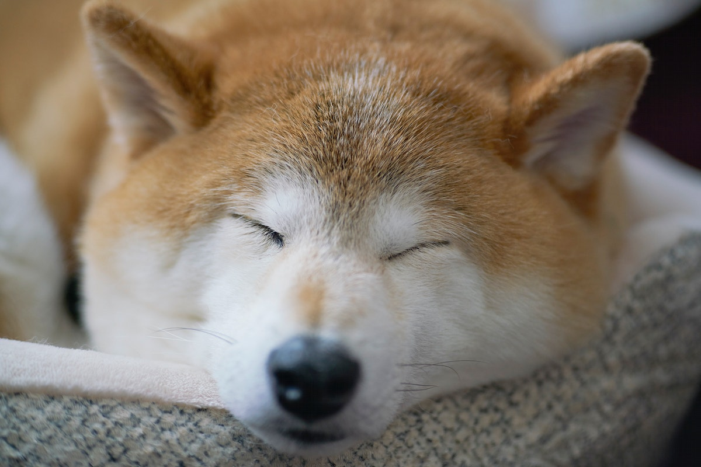
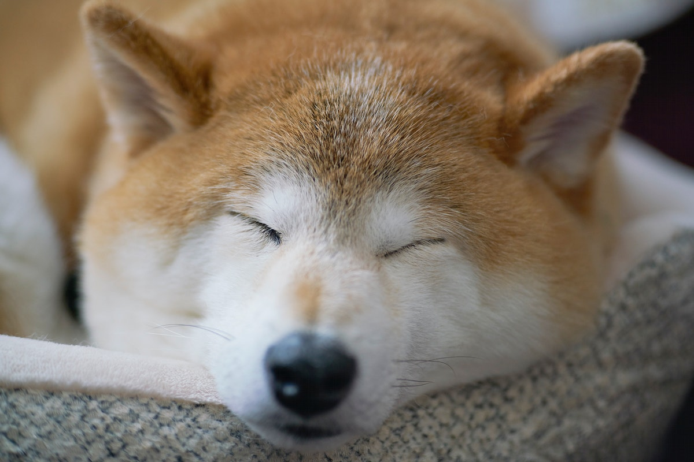

Biscuit

BBiscuit is a 2 year old shiba inu dog. Shiba inus are energetic and playful dogs. Biscuit enjoys running outside in circles and then laying down in the grass in the sun for hours. He also likes going for occasional swims.
As energetic as Biscuit is, he also likes to relax. He loves to sleep in his dog bed and watch Netflix with his owners. His favorite treat is apples.
Photo Gallery


 

Likes
- Going for walks
- Swimming
- Apples
Lucy

Lucy is a 17-year-old calico that I've had since I was 5, she has pretty much grown up with me my whole life. Even though she's old she's still kickin' it and enjoys running around the house at 4am.
Her favorite foods include anything but her kibble. She enjoys sunbathing and long naps, along with lots of petting. However, she hates getting her stomach rubbed..
Photo Gallery


Likes
- Sleeping
- Food
- Her Bed
Riley

Riley is a 2yr old goldendoodle. He is very active and loves attention. Riley can be pretty mischievous; as such, his favorite activity is begging for (or stealing) food, however getting cuddled on a cool floor comes as a close second. In addition, Riley loves to walk in his local park or hang out with his best friend Cosmo.
Riley would NOT survive in the wild. He is very stubborn, jealous, and pampered. He's currently in his “terrible twos,” and must get everything his way. That said, Riley is loved by his family as a perfect, funny, and loyal dog.
Photo Gallery


Likes
- Sneaking onto the couch
- Being grumpy after naps
- Peering onto kitchen countertops
Cheeto

Cheeto is a cat who likes to eat a lot and play a lot. He has an obsession with his grandpa (human) and tries to get outside every single day. If he isn't causing problems, he is usually hiding in a seven foot tall cat tree and sleeping.
Another name for Cheeto is Chicken, because sometimes he sits very scrunched up and ends up looking like a rotisserie chicken. He was nicknamed this by one of his friends, and now he understands it as his own name. He is about six years old and still acts like a younger cat, despite being middle-aged.
Photo Gallery


Likes
- Treats
- Exploring
- His Dad
Jojo

Jojo is a 14 year old dog that has grown up with me. He's a Lhasa-Apso which is a breed from Tibet that's known to be a watchdog. Funny enough, Jojo acts exactly like a watchdog. He likes to spend his days sitting next to a window looking and barking at people passing by. He is only a watchdog though, as he gets scared very easily.
His favorite thing in life is food and his favorite foods are sweet potatoes and naan. He loves walks as well, however he will not go outside if it's raining or if there's a lot of snow on the ground. He's taken some old blankets and pillows we had to make his own bed. He's also trilingual, able to understand English, Hindi, and Japanese.
Photo Gallery


Likes
- Being carried like a baby
- Walks
- Sleeping